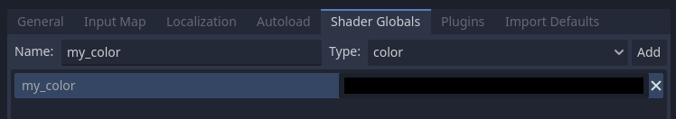
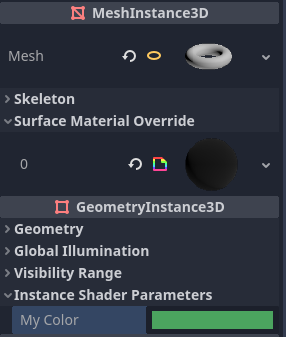

Ngôn ngữ shader
Giới thiệu
Godot dùng một ngôn ngữ shader tương tự GLSL ES 3.0. Hầu hết các kiểu dữ liệu và hàm đều được hỗ trợ, và số ít còn lại có thể sẽ được bổ sung theo thời gian.
Nếu bạn đã quen với GLSL, Hướng dẫn chuyển đổi shader sang Godot là tài liệu sẽ giúp bạn chuyển từ GLSL thông thường sang ngôn ngữ shader của Godot.
Kiểu dữ liệu
Hầu hết các kiểu dữ liệu của GLSL ES 3.0 đều được hỗ trợ:
Kiểu |
Mô tả |
|---|---|
void |
Kiểu dữ liệu void, chỉ hữu ích cho các hàm không trả về gì. |
bool |
Kiểu dữ liệu boolean, chỉ có thể chứa |
bvec2 |
Vector hai thành phần kiểu boolean. |
bvec3 |
Vector ba thành phần kiểu boolean. |
bvec4 |
Vector bốn thành phần kiểu boolean. |
int |
Số nguyên scalar có dấu 32 bit. |
ivec2 |
Vector hai thành phần kiểu số nguyên có dấu. |
ivec3 |
Vector ba thành phần kiểu số nguyên có dấu. |
ivec4 |
Vector bốn thành phần kiểu số nguyên có dấu. |
uint |
Số nguyên scalar không dấu; không thể chứa số âm. |
uvec2 |
Vector hai thành phần kiểu số nguyên không dấu. |
uvec3 |
Vector ba thành phần kiểu số nguyên không dấu. |
uvec4 |
Vector bốn thành phần kiểu số nguyên không dấu. |
float |
Scalar số thực dấu phẩy động 32 bit. |
vec2 |
Vector hai thành phần kiểu số thực dấu phẩy động. |
vec3 |
Vector ba thành phần kiểu số thực dấu phẩy động. |
vec4 |
Vector bốn thành phần kiểu số thực dấu phẩy động. |
mat2 |
Ma trận 2x2, theo thứ tự cột chính (column major). |
mat3 |
Ma trận 3x3, theo thứ tự cột chính (column major). |
mat4 |
Ma trận 4x4, theo thứ tự cột chính (column major). |
sampler2D |
Kiểu sampler để bind texture 2D, được đọc dưới dạng float. |
isampler2D |
Kiểu sampler để bind texture 2D, được đọc dưới dạng số nguyên có dấu. |
usampler2D |
Kiểu sampler để bind texture 2D, được đọc dưới dạng số nguyên không dấu. |
sampler2DArray |
Kiểu sampler để bind mảng texture 2D, được đọc dưới dạng float. |
isampler2DArray |
Kiểu sampler để bind mảng texture 2D, được đọc dưới dạng số nguyên có dấu. |
usampler2DArray |
Kiểu sampler để bind mảng texture 2D, được đọc dưới dạng số nguyên không dấu. |
sampler3D |
Kiểu sampler để bind texture 3D, được đọc dưới dạng float. |
isampler3D |
Kiểu sampler để bind texture 3D, được đọc dưới dạng số nguyên có dấu. |
usampler3D |
Kiểu sampler để bind texture 3D, được đọc dưới dạng số nguyên không dấu. |
samplerCube |
Kiểu sampler để bind Cubemap, được đọc dưới dạng float. |
samplerCubeArray |
Kiểu sampler để bind mảng Cubemap, được đọc dưới dạng float. Chỉ được hỗ trợ trong Forward+ và Mobile, không hỗ trợ trong Compatibility. |
samplerExternalOES |
Kiểu sampler ngoài (external). Chỉ được hỗ trợ trên Compatibility/nền tảng Android. |
Các kiểu này cũng có thể được đặt bên trong mảng hoặc struct, vốn cũng có thể dùng làm tham số hàm hoặc giá trị trả về. Mảng có thể dùng làm uniform, nhưng struct thì không.
Cảnh báo
Biến cục bộ không được khởi tạo với giá trị mặc định như 0.0. Nếu bạn dùng một biến mà chưa gán giá trị cho nó trước, biến đó sẽ chứa bất kỳ giá trị nào đang có sẵn tại vị trí bộ nhớ đó, và sẽ xuất hiện những lỗi hiển thị khó lường. Tuy nhiên, uniform và varying được khởi tạo với giá trị mặc định.
Ép kiểu (casting)
Giống như GLSL ES 3.0, không được phép ép kiểu ngầm định giữa scalar và vector có cùng kích thước nhưng khác kiểu. Ép kiểu giữa các kiểu có kích thước khác nhau cũng không được phép. Việc chuyển đổi phải được thực hiện tường minh thông qua constructor.
Ví dụ:
float a = 2; // invalid
float a = 2.0; // valid
float a = float(2); // valid
Hằng số nguyên mặc định là có dấu, vì vậy luôn cần ép kiểu để chuyển sang không dấu:
int a = 2; // valid
uint a = 2; // invalid
uint a = uint(2); // valid
Thành viên
Các thành phần scalar riêng lẻ của kiểu vector được truy cập thông qua các thành viên "x", "y", "z" và "w". Ngoài ra, dùng "r", "g", "b" và "a" cũng hoạt động và tương đương. Hãy dùng cách nào phù hợp nhất với nhu cầu của bạn.
Với ma trận, hãy dùng cú pháp chỉ mục m[column][row] để truy cập từng scalar, hoặc m[column] để truy cập một vector theo chỉ số cột. Ví dụ, để truy cập thành phần y của phép tịnh tiến từ một ma trận biến đổi mat4 (cột thứ 4, dòng thứ 2), bạn dùng m[3][1] hoặc m[3].y.
Khởi tạo
Khi khởi tạo kiểu vector, bạn luôn phải truyền:
// The required amount of scalars
vec4 a = vec4(0.0, 1.0, 2.0, 3.0);
// Complementary vectors and/or scalars
vec4 a = vec4(vec2(0.0, 1.0), vec2(2.0, 3.0));
vec4 a = vec4(vec3(0.0, 1.0, 2.0), 3.0);
// A single scalar for the whole vector
vec4 a = vec4(0.0);
Khởi tạo kiểu ma trận yêu cầu các vector có cùng số chiều với ma trận, được hiểu là các cột. Bạn cũng có thể tạo ma trận đường chéo bằng cú pháp matx(float). Theo đó, mat4(1.0) là một ma trận đơn vị.
mat2 m2 = mat2(vec2(1.0, 0.0), vec2(0.0, 1.0));
mat3 m3 = mat3(vec3(1.0, 0.0, 0.0), vec3(0.0, 1.0, 0.0), vec3(0.0, 0.0, 1.0));
mat4 identity = mat4(1.0);
Ma trận cũng có thể được tạo từ một ma trận có số chiều khác. Có hai quy tắc:
1. Nếu tạo một ma trận lớn hơn từ một ma trận nhỏ hơn, các hàng và cột bổ sung sẽ được đặt thành các giá trị mà chúng có trong ma trận đơn vị. 1. Nếu tạo một ma trận nhỏ hơn từ một ma trận lớn hơn, ma trận con phía trên bên trái của ma trận lớn hơn sẽ được dùng.
mat3 basis = mat3(MODEL_MATRIX);
mat4 m4 = mat4(basis);
mat2 m2 = mat2(m4);
Swizzling
Bạn có thể lấy bất kỳ tổ hợp thành phần nào theo bất kỳ thứ tự nào, miễn là kết quả là một kiểu vector khác (hoặc scalar). Điều này dễ minh họa hơn là giải thích:
vec4 a = vec4(0.0, 1.0, 2.0, 3.0);
vec3 b = a.rgb; // Creates a vec3 with vec4 components.
vec3 b = a.ggg; // Also valid; creates a vec3 and fills it with a single vec4 component.
vec3 b = a.bgr; // "b" will be vec3(2.0, 1.0, 0.0).
vec3 b = a.xyz; // Also rgba, xyzw are equivalent.
vec3 b = a.stp; // And stpq (for texture coordinates).
float c = b.w; // Invalid, because "w" is not present in vec3 b.
vec3 c = b.xrt; // Invalid, mixing different styles is forbidden.
b.rrr = a.rgb; // Invalid, assignment with duplication.
b.bgr = a.rgb; // Valid assignment. "b"'s "blue" component will be "a"'s "red" and vice versa.
Độ chính xác
Bạn có thể thêm bộ chỉ định độ chính xác (precision modifier) cho các kiểu dữ liệu; hãy dùng chúng cho uniform, biến, đối số và varying:
lowp vec4 a = vec4(0.0, 1.0, 2.0, 3.0); // low precision, usually 8 bits per component mapped to 0-1
mediump vec4 a = vec4(0.0, 1.0, 2.0, 3.0); // medium precision, usually 16 bits or half float
highp vec4 a = vec4(0.0, 1.0, 2.0, 3.0); // high precision, uses full float or integer range (32 bit default)
Dùng độ chính xác thấp hơn cho một số phép toán có thể tăng tốc tính toán (đổi lại độ chính xác giảm). Điều này hiếm khi cần trong hàm xử lý vertex (nơi hầu hết thời gian cần độ chính xác đầy đủ), nhưng thường hữu ích trong bộ xử lý fragment.
Một số kiến trúc (chủ yếu là thiết bị di động) có thể hưởng lợi đáng kể từ việc này, nhưng cũng có nhược điểm như chi phí phụ trội khi chuyển đổi giữa các mức độ chính xác. Hãy tham khảo tài liệu của kiến trúc đích để biết thêm thông tin. Trong nhiều trường hợp, driver di động gây ra hành vi không nhất quán hoặc không mong muốn, nên tốt nhất là tránh chỉ định độ chính xác trừ khi cần thiết.
Mảng
Mảng là vùng chứa cho nhiều biến có cùng kiểu.
Mảng cục bộ
Mảng cục bộ được khai báo trong hàm. Chúng có thể dùng mọi kiểu dữ liệu được phép, trừ sampler. Cú pháp khai báo mảng theo kiểu C: [const] + [precision] + typename + identifier + [array size].
void fragment() {
float arr[3];
}
Chúng có thể được khởi tạo ngay từ đầu như sau:
float float_arr[3] = float[3] (1.0, 0.5, 0.0); // first constructor
int int_arr[3] = int[] (2, 1, 0); // second constructor
vec2 vec2_arr[3] = { vec2(1.0, 1.0), vec2(0.5, 0.5), vec2(0.0, 0.0) }; // third constructor
bool bool_arr[] = { true, true, false }; // fourth constructor - size is defined automatically from the element count
Bạn có thể khai báo nhiều mảng (thậm chí với kích thước khác nhau) trong một biểu thức:
float a[3] = float[3] (1.0, 0.5, 0.0),
b[2] = { 1.0, 0.5 },
c[] = { 0.7 },
d = 0.0,
e[5];
Để truy cập một phần tử của mảng, hãy dùng cú pháp chỉ số:
float arr[3];
arr[0] = 1.0; // setter
COLOR.r = arr[0]; // getter
Mảng cũng có hàm tích hợp .length() (đừng nhầm với hàm tích hợp length()). Hàm này không nhận tham số nào và trả về kích thước của mảng.
float arr[] = { 0.0, 1.0, 0.5, -1.0 };
for (int i = 0; i < arr.length(); i++) {
// ...
}
Ghi chú
Nếu bạn dùng chỉ số nhỏ hơn 0 hoặc lớn hơn kích thước mảng, shader sẽ bị crash và làm hỏng quá trình kết xuất. Để tránh điều này, hãy dùng các hàm length(), if hoặc clamp() để đảm bảo chỉ số nằm trong khoảng từ 0 đến độ dài của mảng. Luôn kiểm thử và kiểm tra code cẩn thận. Nếu bạn truyền một biểu thức hằng hoặc một con số, trình chỉnh sửa sẽ kiểm tra giới hạn của nó để ngăn crash.
Mảng toàn cục
Bạn có thể khai báo mảng ở phạm vi toàn cục dưới dạng const hoặc uniform:
shader_type spatial;
const lowp vec3 v[1] = lowp vec3[1] ( vec3(0, 0, 1) );
uniform lowp vec3 w[1];
void fragment() {
ALBEDO = v[0] + w[0];
}
Ghi chú
Mảng toàn cục dùng cú pháp giống mảng cục bộ, chỉ khác là có thêm const hoặc uniform vào phần khai báo. Lưu ý rằng mảng uniform không thể có giá trị mặc định.
Hằng số
Dùng từ khóa const trước phần khai báo biến để biến đó trở nên bất biến, nghĩa là không thể sửa đổi. Mọi kiểu cơ bản, trừ sampler, đều có thể được khai báo là hằng số. Truy cập và sử dụng một giá trị hằng nhanh hơn một chút so với dùng uniform. Hằng số phải được khởi tạo ngay khi khai báo.
const vec2 a = vec2(0.0, 1.0);
vec2 b;
a = b; // invalid
b = a; // valid
Hằng số không thể sửa đổi và cũng không thể có hint, nhưng nhiều hằng số (nếu cùng kiểu) có thể được khai báo trong một biểu thức, ví dụ
const vec2 V1 = vec2(1, 1), V2 = vec2(2, 2);
Tương tự biến, mảng cũng có thể được khai báo với const.
const float arr[] = { 1.0, 0.5, 0.0 };
arr[0] = 1.0; // invalid
COLOR.r = arr[0]; // valid
Hằng số có thể được khai báo ở cả phạm vi toàn cục (bên ngoài mọi hàm) lẫn cục bộ (bên trong hàm). Hằng số toàn cục hữu ích khi bạn muốn truy cập một giá trị không cần sửa đổi trong toàn bộ shader. Giống uniform, hằng số toàn cục được chia sẻ giữa mọi giai đoạn shader, nhưng không thể truy cập từ bên ngoài shader.
shader_type spatial;
const float GOLDEN_RATIO = 1.618033988749894;
Hằng số kiểu float phải được khởi tạo bằng ký hiệu . sau phần thập phân hoặc bằng ký hiệu khoa học. Hậu tố f tùy chọn cũng được hỗ trợ.
float a = 1.0;
float b = 1.0f; // same, using suffix for clarity
float c = 1e-1; // gives 0.1 by using the scientific notation
Hằng số kiểu uint (số nguyên không dấu) phải có hậu tố u để phân biệt với số nguyên có dấu. Ngoài ra, bạn cũng có thể dùng hàm chuyển đổi tích hợp uint(x).
uint a = 1u;
uint b = uint(1);
Struct
Struct là kiểu phức hợp có thể dùng để trừu tượng hóa code shader tốt hơn. Bạn có thể khai báo chúng ở phạm vi toàn cục như sau:
struct PointLight {
vec3 position;
vec3 color;
float intensity;
};
Sau khi khai báo, bạn có thể tạo instance và khởi tạo chúng như sau:
void fragment()
{
PointLight light;
light.position = vec3(0.0);
light.color = vec3(1.0, 0.0, 0.0);
light.intensity = 0.5;
}
Hoặc dùng hàm khởi tạo struct cho cùng mục đích:
PointLight light = PointLight(vec3(0.0), vec3(1.0, 0.0, 0.0), 0.5);
Struct có thể chứa struct hoặc mảng khác, bạn cũng có thể tạo instance của chúng dưới dạng hằng số toàn cục:
shader_type spatial;
...
struct Scene {
PointLight lights[2];
};
const Scene scene = Scene(PointLight[2](PointLight(vec3(0.0, 0.0, 0.0), vec3(1.0, 0.0, 0.0), 1.0), PointLight(vec3(0.0, 0.0, 0.0), vec3(1.0, 0.0, 0.0), 1.0)));
void fragment()
{
ALBEDO = scene.lights[0].color;
}
Bạn cũng có thể truyền chúng vào hàm:
shader_type canvas_item;
...
Scene construct_scene(PointLight light1, PointLight light2) {
return Scene({light1, light2});
}
void fragment()
{
COLOR.rgb = construct_scene(PointLight(vec3(0.0, 0.0, 0.0), vec3(1.0, 0.0, 0.0), 1.0), PointLight(vec3(0.0, 0.0, 0.0), vec3(1.0, 0.0, 1.0), 1.0)).lights[0].color;
}
Toán tử
Ngôn ngữ shader của Godot hỗ trợ cùng tập toán tử với GLSL ES 3.0. Dưới đây là danh sách các toán tử theo thứ tự ưu tiên:
Độ ưu tiên |
Lớp |
Toán tử |
1 (cao nhất) |
nhóm trong ngoặc |
() |
2 |
một ngôi |
+, -, !, ~ |
3 |
nhân |
/, *, % |
4 |
cộng |
+, - |
5 |
dịch bit |
<<, >> |
6 |
quan hệ |
<, >, <=, >= |
7 |
bằng nhau |
==, != |
8 |
AND theo bit |
& |
9 |
OR loại trừ theo bit |
^ |
10 |
OR bao hàm theo bit |
| |
11 |
AND logic |
&& |
12 (thấp nhất) |
OR bao hàm logic |
|| |
Ghi chú
Hầu hết các toán tử nhận vector hoặc ma trận (nhân, chia, v.v.) hoạt động theo từng thành phần, nghĩa là phép toán được áp dụng cho giá trị đầu tiên của mỗi vector, rồi đến giá trị thứ hai của mỗi vector, v.v. Một vài ví dụ:
Phép toán |
Phép toán vô hướng tương đương |
|---|---|
|
|
|
|
|
|
Đặc tả ngôn ngữ GLSL viết trong mục 5.10 Vector and Matrix Operations:
Trừ một vài ngoại lệ, các phép toán được thực hiện theo từng thành phần. Thông thường, khi một toán tử hoạt động trên vector hoặc ma trận, nó hoạt động độc lập trên từng thành phần của vector hoặc ma trận, theo kiểu từng thành phần. [...] Các ngoại lệ là ma trận nhân với vector, vector nhân với ma trận, và ma trận nhân với ma trận. Những phép toán này không thực hiện theo từng thành phần, mà thực hiện phép nhân đại số tuyến tính đúng nghĩa.
Điều khiển luồng
Ngôn ngữ shader của Godot hỗ trợ các kiểu điều khiển luồng phổ biến nhất:
// `if`, `else if` and `else`.
if (cond) {
} else if (other_cond) {
} else {
}
// Ternary operator.
// This is an expression that behaves like `if`/`else` and returns the value.
// If `cond` evaluates to `true`, `result` will be `9`.
// Otherwise, `result` will be `5`.
int result = cond ? 9 : 5;
// `switch`.
switch (i) { // `i` should be a signed integer expression.
case -1:
break;
case 0:
return; // `break` or `return` to avoid running the next `case`.
case 1: // Fallthrough (no `break` or `return`): will run the next `case`.
case 2:
break;
//...
default: // Only run if no `case` above matches. Optional.
break;
}
// `for` loop. Best used when the number of elements to iterate on
// is known in advance.
for (int i = 0; i < 10; i++) {
}
// `while` loop. Best used when the number of elements to iterate on
// is not known in advance.
while (cond) {
}
// `do while`. Like `while`, but always runs at least once even if `cond`
// never evaluates to `true`.
do {
} while (cond);
Hãy nhớ rằng trên GPU hiện đại, vòng lặp vô hạn có thể xảy ra và làm treo ứng dụng của bạn (kể cả trình chỉnh sửa). Godot không thể bảo vệ bạn khỏi điều này, vì vậy hãy cẩn thận để không mắc lỗi này!
Ngoài ra, khi so sánh giá trị dấu phẩy động với một con số, hãy đảm bảo so sánh chúng với một khoảng thay vì một con số chính xác.
Một phép so sánh như if (value == 0.3) có thể không cho kết quả true. Phép toán dấu phẩy động thường là xấp xỉ và có thể cho kết quả bất ngờ. Nó cũng có thể hoạt động khác nhau tùy phần cứng.
Đừng làm thế này.
float value = 0.1 + 0.2;
// May not evaluate to `true`!
if (value == 0.3) {
// ...
}
Thay vào đó, luôn thực hiện so sánh theo khoảng với một giá trị epsilon. Số dấu phẩy động càng lớn (và càng kém chính xác), giá trị epsilon càng phải lớn.
const float EPSILON = 0.0001;
if (value >= 0.3 - EPSILON && value <= 0.3 + EPSILON) {
// ...
}
Xem floating-point-gui.de để biết thêm thông tin.
Loại bỏ (discard)
Hàm fragment, light và các hàm tùy chỉnh (được gọi từ fragment hoặc light) có thể dùng từ khóa discard. Khi được dùng, fragment bị loại bỏ và không có gì được ghi.
Hãy lưu ý rằng discard tốn hiệu năng khi được dùng, vì nó khiến depth prepass mất tác dụng trên mọi bề mặt dùng shader đó. Ngoài ra, một pixel bị loại bỏ vẫn cần được kết xuất trong vertex shader, nghĩa là một shader dùng discard trên tất cả pixel của nó vẫn tốn chi phí kết xuất hơn so với việc không kết xuất đối tượng nào ngay từ đầu.
Hàm
Bạn có thể định nghĩa hàm trong shader Godot. Chúng dùng cú pháp sau:
ret_type func_name(args) {
return ret_type; // if returning a value
}
// a more specific example:
int sum2(int a, int b) {
return a + b;
}
Bạn chỉ có thể dùng các hàm đã được định nghĩa phía trên (cao hơn trong trình chỉnh sửa) hàm mà bạn gọi chúng. Định nghĩa lại một hàm đã được định nghĩa phía trên (hoặc trùng tên với hàm tích hợp) sẽ gây lỗi.
Đối số của hàm có thể có các bộ chỉ định đặc biệt:
in: Nghĩa là đối số chỉ để đọc (mặc định).
out: Nghĩa là đối số chỉ để ghi.
inout: Nghĩa là đối số được truyền hoàn toàn qua tham chiếu.
const: Nghĩa là đối số là hằng số và không thể thay đổi, có thể kết hợp với bộ chỉ định in.
Ví dụ dưới đây:
void sum2(int a, int b, inout int result) {
result = a + b;
}
Nạp chồng hàm (function overloading) được hỗ trợ. Bạn có thể định nghĩa nhiều hàm cùng tên nhưng khác đối số. Lưu ý rằng ép kiểu ngầm định trong lời gọi hàm nạp chồng là không được phép, ví dụ từ int sang float (1 sang 1.0).
vec3 get_color(int t) {
return vec3(1, 0, 0); // Red color.
}
vec3 get_color(float t) {
return vec3(0, 1, 0); // Green color.
}
void fragment() {
vec3 red = get_color(1);
vec3 green = get_color(1.0);
}
Varying
Để gửi dữ liệu từ hàm xử lý vertex sang hàm xử lý fragment (hoặc light), người ta dùng varying. Chúng được đặt cho mỗi vertex nguyên thủy trong bộ xử lý vertex, và giá trị được nội suy cho mỗi pixel trong bộ xử lý fragment.
shader_type spatial;
varying vec3 some_color;
void vertex() {
some_color = NORMAL; // Make the normal the color.
}
void fragment() {
ALBEDO = some_color;
}
void light() {
DIFFUSE_LIGHT = some_color * 100; // optionally
}
Varying cũng có thể là một mảng:
shader_type spatial;
varying float var_arr[3];
void vertex() {
var_arr[0] = 1.0;
var_arr[1] = 0.0;
}
void fragment() {
ALBEDO = vec3(var_arr[0], var_arr[1], var_arr[2]); // red color
}
Bạn cũng có thể gửi dữ liệu từ bộ xử lý fragment sang light bằng từ khóa varying. Để làm vậy, bạn gán nó trong fragment và sau đó dùng trong hàm light.
shader_type spatial;
varying vec3 some_light;
void fragment() {
some_light = ALBEDO * 100.0; // Make a shining light.
}
void light() {
DIFFUSE_LIGHT = some_light;
}
Lưu ý rằng varying không được gán trong các hàm tùy chỉnh hoặc trong hàm bộ xử lý light như sau:
shader_type spatial;
varying float test;
void foo() {
test = 0.0; // Error.
}
void vertex() {
test = 0.0;
}
void light() {
test = 0.0; // Error too.
}
Giới hạn này được đưa ra để ngăn việc sử dụng sai trước khi khởi tạo.
Bộ chỉ định nội suy
Một số giá trị được nội suy trong pipeline shading. Bạn có thể thay đổi cách thực hiện các phép nội suy này bằng bộ chỉ định nội suy.
shader_type spatial;
varying flat vec3 our_color;
void vertex() {
our_color = COLOR.rgb;
}
void fragment() {
ALBEDO = our_color;
}
Có hai bộ chỉ định nội suy:
Bộ chỉ định |
Mô tả |
|---|---|
flat |
Giá trị không được nội suy. |
smooth |
Giá trị được nội suy theo cách hiệu chỉnh phối cảnh. Đây là mặc định. |
Uniform
Bạn có thể truyền giá trị vào shader bằng uniform, được định nghĩa ở phạm vi toàn cục của shader, bên ngoài các hàm. Khi shader sau đó được gán cho một material, các uniform sẽ xuất hiện dưới dạng tham số có thể chỉnh sửa trong inspector của material. Uniform không thể được ghi từ bên trong shader. Bất kỳ kiểu dữ liệu nào ngoại trừ void đều có thể là uniform.
shader_type spatial;
uniform float some_value;
uniform vec3 colors[3];
Bạn có thể đặt uniform trong trình chỉnh sửa, ở inspector của material. Ngoài ra, bạn có thể đặt chúng từ code.
Uniform hint
Godot cung cấp các uniform hint tùy chọn để trình biên dịch hiểu uniform được dùng cho mục đích gì, và trình chỉnh sửa nên cho phép người dùng sửa đổi nó như thế nào.
shader_type spatial;
uniform vec4 color : source_color;
uniform float amount : hint_range(0, 1);
uniform vec4 other_color : source_color = vec4(1.0); // Default values go after the hint.
uniform sampler2D image : source_color;
Uniform cũng có thể được gán giá trị mặc định:
shader_type spatial;
uniform vec4 some_vector = vec4(0.0);
uniform vec4 some_color : source_color = vec4(1.0);
Lưu ý rằng khi thêm cả giá trị mặc định và hint, giá trị mặc định đặt sau hint.
Danh sách đầy đủ các uniform hint bên dưới:
Kiểu |
Hint |
Mô tả |
|---|---|---|
vec3, vec4 |
source_color |
Dùng làm màu. |
int |
hint_enum("String1", "String2") |
Hiển thị đầu vào int dưới dạng widget danh sách thả xuống trong trình chỉnh sửa. |
int, float |
hint_range(min, max[, step]) |
Giới hạn giá trị trong một khoảng (với min/max/step). |
sampler2D |
source_color |
Dùng làm màu albedo. |
sampler2D |
hint_normal |
Dùng làm normal map. |
sampler2D |
hint_default_white |
Dùng làm giá trị hoặc màu albedo, mặc định là màu trắng đục. |
sampler2D |
hint_default_black |
Dùng làm giá trị hoặc màu albedo, mặc định là màu đen đục. |
sampler2D |
hint_default_transparent |
Dùng làm giá trị hoặc màu albedo, mặc định là màu đen trong suốt. |
sampler2D |
hint_anisotropy |
Dùng làm flowmap, mặc định hướng sang phải. |
sampler2D |
hint_roughness[_r, _g, _b, _a, _normal, _gray] |
Dùng cho bộ giới hạn độ nhám (roughness limiter) khi import (cố gắng giảm aliasing phản xạ specular). |
sampler2D |
filter[_nearest, _linear][_mipmap][_anisotropic] |
Bật chế độ lọc texture được chỉ định. |
sampler2D |
repeat[_enable, _disable] |
Bật lặp texture. |
sampler2D |
hint_screen_texture |
Texture là texture màn hình. |
sampler2D |
hint_depth_texture |
Texture là texture độ sâu. |
sampler2D |
hint_normal_roughness_texture |
Texture là texture normal roughness (chỉ được hỗ trợ trong Forward+). |
Sử dụng hint_enum
Bạn có thể truy cập giá trị int dưới dạng widget danh sách thả xuống dễ đọc bằng uniform hint_enum:
uniform int noise_type : hint_enum("OpenSimplex2", "Cellular", "Perlin", "Value") = 0;
Bạn có thể gán giá trị tường minh cho uniform hint_enum bằng cú pháp dấu hai chấm tương tự GDScript:
uniform int character_speed: hint_enum("Slow:30", "Average:60", "Very Fast:200") = 60;
Giá trị sẽ được lưu dưới dạng số nguyên, tương ứng với chỉ số của tùy chọn được chọn (tức 0, 1 hoặc 2) hoặc giá trị được gán bằng cú pháp dấu hai chấm (tức 30, 60 hoặc 200). Khi đặt giá trị bằng set_shader_parameter(), bạn phải dùng giá trị số nguyên, không phải tên String.
Sử dụng source_color
Bất kỳ texture nào chứa dữ liệu màu sRGB đều cần hint source_color để được lấy mẫu chính xác. Lý do là Godot kết xuất trong không gian màu tuyến tính, nhưng một số texture chứa dữ liệu màu sRGB. Nếu không dùng hint này, texture sẽ trông nhạt màu.
Texture albedo và texture màu thường nên có hint source_color. Texture normal, roughness, metallic và height thường không cần hint source_color.
Hint source_color là bắt buộc trong renderer Forward+ và Mobile, và trong shader canvas_item khi HDR 2D được bật. Hint source_color là tùy chọn với renderer Compatibility, và với shader canvas_item nếu HDR 2D bị tắt. Tuy nhiên, bạn nên luôn dùng hint source_color, vì nó vẫn hoạt động ngay cả khi bạn đổi renderer hoặc tắt HDR 2D.
Nhóm uniform
Để nhóm nhiều uniform vào một mục trong inspector, bạn có thể dùng từ khóa group_uniform như sau:
group_uniforms MyGroup;
uniform sampler2D test;
Bạn có thể đóng nhóm bằng cách dùng:
group_uniforms;
Cú pháp này cũng hỗ trợ nhóm con (không bắt buộc phải khai báo nhóm gốc trước):
group_uniforms MyGroup.MySubgroup;
Uniform toàn cục
Đôi khi bạn muốn sửa đổi một tham số trong nhiều shader khác nhau cùng lúc. Với uniform thông thường, việc này tốn nhiều công sức vì phải theo dõi tất cả các shader này và đặt uniform cho từng shader. Uniform toàn cục cho phép bạn tạo và cập nhật các uniform có sẵn trong mọi shader, ở mọi loại shader (canvas_item, spatial, particles, sky và fog).
Uniform toàn cục đặc biệt hữu ích cho các hiệu ứng môi trường ảnh hưởng đến nhiều đối tượng trong một scene, như làm tán lá uốn cong khi người chơi ở gần, hoặc làm các đối tượng chuyển động theo gió.
Ghi chú
Uniform toàn cục không giống phạm vi toàn cục của một shader riêng lẻ. Trong khi uniform thông thường được định nghĩa bên ngoài các hàm shader và do đó nằm ở phạm vi toàn cục của shader, uniform toàn cục là toàn cục đối với mọi shader trong toàn bộ dự án (nhưng trong mỗi shader, chúng cũng nằm ở phạm vi toàn cục).
Để tạo uniform toàn cục, hãy mở Project Settings rồi đến tab Shader Globals. Chỉ định tên cho uniform (phân biệt chữ hoa chữ thường) và kiểu, sau đó nhấn Add ở góc trên bên phải hộp thoại. Sau đó bạn có thể chỉnh sửa giá trị gán cho uniform bằng cách nhấn vào giá trị trong danh sách uniform:

Thêm uniform toàn cục trong tab Shader Globals của Project Settings
Sau khi tạo uniform toàn cục, bạn có thể dùng nó trong shader như sau:
shader_type canvas_item;
global uniform vec4 my_color;
void fragment() {
COLOR = my_color.rgb;
}
Lưu ý rằng uniform toàn cục phải tồn tại trong Project Settings tại thời điểm shader được lưu, nếu không quá trình biên dịch sẽ thất bại. Dù bạn có thể gán giá trị mặc định bằng global uniform vec4 my_color = ... trong code shader, giá trị đó sẽ bị bỏ qua vì dù sao uniform toàn cục vẫn luôn phải được định nghĩa trong Project Settings.
Để thay đổi giá trị của uniform toàn cục lúc runtime, hãy dùng phương thức RenderingServer.global_shader_parameter_set trong script:
RenderingServer.global_shader_parameter_set("my_color", Color(0.3, 0.6, 1.0))
Bạn có thể gán giá trị uniform toàn cục bao nhiêu lần tùy ý mà không ảnh hưởng đến hiệu năng, vì việc đặt dữ liệu không cần đồng bộ giữa CPU và GPU.
Bạn cũng có thể thêm hoặc xóa uniform toàn cục lúc runtime:
RenderingServer.global_shader_parameter_add("my_color", RenderingServer.GLOBAL_VAR_TYPE_COLOR, Color(0.3, 0.6, 1.0))
RenderingServer.global_shader_parameter_remove("my_color")
Thêm hoặc xóa uniform toàn cục lúc runtime tốn hiệu năng, dù không đáng kể bằng việc lấy giá trị uniform toàn cục từ script (xem cảnh báo bên dưới).
Cảnh báo
Dù bạn có thể truy vấn giá trị của uniform toàn cục lúc runtime trong script bằng RenderingServer.global_shader_parameter_get("uniform_name"), việc này gây tổn hại lớn về hiệu năng vì luồng kết xuất cần đồng bộ với luồng gọi.
Vì vậy, không nên đọc liên tục giá trị uniform shader toàn cục trong script. Nếu bạn cần đọc giá trị trong script sau khi đặt chúng, hãy cân nhắc tạo một autoload để lưu các giá trị cần truy vấn cùng lúc với khi bạn đặt chúng làm uniform toàn cục.
Uniform theo từng instance
Ghi chú
Uniform theo từng instance có sẵn trong cả shader canvas_item (2D) và spatial (3D).
Đôi khi bạn muốn sửa đổi một tham số trên từng node dùng material. Ví dụ, trong một khu rừng đầy cây, khi bạn muốn mỗi cây có màu hơi khác nhau và có thể chỉnh tay. Nếu không có uniform theo từng instance, bạn phải tạo một material riêng cho mỗi cây (mỗi cái có sắc độ hơi khác). Điều này làm việc quản lý material phức tạp hơn, đồng thời tốn hiệu năng do scene cần nhiều instance material riêng biệt hơn. Màu vertex cũng có thể dùng ở đây, nhưng sẽ cần tạo bản sao riêng của mesh cho mỗi màu khác nhau, điều này cũng tốn hiệu năng.
Uniform theo từng instance được đặt trên mỗi GeometryInstance3D, thay vì trên mỗi instance Material. Hãy lưu ý điều này khi làm việc với mesh được gán nhiều material, hoặc với thiết lập MultiMesh.
shader_type spatial;
// Provide a hint to edit as a color. Optionally, a default value can be provided.
// If no default value is provided, the type's default is used (e.g. opaque black for colors).
instance uniform vec4 my_color : source_color = vec4(1.0, 0.5, 0.0, 1.0);
void fragment() {
ALBEDO = my_color.rgb;
}
Sau khi lưu shader, bạn có thể thay đổi giá trị của uniform theo từng instance bằng inspector:

Đặt giá trị của uniform theo từng instance trong mục GeometryInstance3D của inspector
Giá trị uniform theo từng instance cũng có thể được đặt lúc runtime bằng phương thức set_instance_shader_parameter trên một node kế thừa từ class_GeometryInstance3D:
$MeshInstance3D.set_instance_shader_parameter("my_color", Color(0.3, 0.6, 1.0))
Khi dùng uniform theo từng instance, có một số hạn chế bạn cần lưu ý:
Uniform theo từng instance không hỗ trợ texture hoặc mảng, chỉ hỗ trợ các kiểu scalar và vector thông thường. Để khắc phục, bạn có thể truyền một mảng texture dưới dạng uniform thông thường, rồi truyền chỉ số của texture cần vẽ bằng uniform theo từng instance.
Ghi chú
Trong các phiên bản GLSL trước 4.0 (tức GLSL 3.3 trở xuống), bạn không thể trực tiếp truy cập mảng texture bằng chỉ số là uniform theo từng instance, vì mảng sampler chỉ có thể được truy cập bằng biểu thức hằng tại thời điểm biên dịch. Điều này ảnh hưởng đến các shader được biên dịch với renderer Compatibility.
Nếu bạn bị ảnh hưởng, hãy dùng câu lệnh
switchđể chọn texture:
uniform sampler2D texture_array[2];
instance uniform int texture_index;
void fragment() {
vec4 color;
switch (texture_index) {
case 0:
color = texture(texture_array[0], UV);
break;
case 1:
color = texture(texture_array[1], UV);
break;
}
COLOR = color;
}
Có giới hạn tối đa thực tế là 16 uniform instance cho mỗi shader.
Nếu mesh của bạn dùng nhiều material, tham số của material đầu tiên được tìm thấy trên mesh sẽ "thắng" các material sau, trừ khi chúng có cùng tên, chỉ số và kiểu. Trong trường hợp đó, mọi tham số đều được áp dụng đúng.
Nếu gặp tình huống trên, bạn có thể tránh xung đột bằng cách chỉ định thủ công chỉ số (0-15) của uniform instance bằng hint
instance_index:
instance uniform vec4 my_color : source_color, instance_index(5);
Đặt uniform từ code
Bạn có thể đặt uniform từ GDScript bằng phương thức set_shader_parameter():
material.set_shader_parameter("some_value", some_value)
material.set_shader_parameter("colors", [Vector3(1, 0, 0), Vector3(0, 1, 0), Vector3(0, 0, 1)])
Ghi chú
Đối số đầu tiên của set_shader_parameter() là tên của uniform trong shader. Nó phải khớp chính xác với tên uniform trong shader, nếu không sẽ không được nhận diện.
GDScript dùng các kiểu biến khác với GLSL, nên khi truyền biến từ GDScript sang shader, Godot tự động chuyển đổi kiểu. Dưới đây là bảng các kiểu tương ứng:
Kiểu GLSL |
Kiểu GDScript |
Ghi chú |
|---|---|---|
bool |
bool |
|
bvec2 |
int |
Số nguyên đóng gói theo bit, trong đó bit 0 (LSB) tương ứng với x. Ví dụ, một bvec2 gồm (bx, by) có thể được tạo theo cách sau: bvec2_input: int = (int(bx)) | (int(by) << 1)
|
bvec3 |
int |
Số nguyên đóng gói theo bit, trong đó bit 0 (LSB) tương ứng với x. |
bvec4 |
int |
Số nguyên đóng gói theo bit, trong đó bit 0 (LSB) tương ứng với x. |
int |
int |
|
ivec2 |
Vector2i |
|
ivec3 |
Vector3i |
|
ivec4 |
Vector4i |
|
uint |
int |
|
uvec2 |
Vector2i |
|
uvec3 |
Vector3i |
|
uvec4 |
Vector4i |
|
float |
float |
|
vec2 |
Vector2 |
|
vec3 |
Vector3, Color |
Khi dùng Color, nó sẽ được hiểu là (r, g, b). |
vec4 |
Vector4, Color, Rect2, Plane, Quaternion |
Khi dùng Color, nó sẽ được hiểu là (r, g, b, a). Khi dùng Rect2, nó sẽ được hiểu là (position.x, position.y, size.x, size.y). Khi dùng Plane, nó sẽ được hiểu là (normal.x, normal.y, normal.z, d). |
mat2 |
Transform2D |
|
mat3 |
Basis |
|
mat4 |
Projection, Transform3D |
Khi dùng Transform3D, vector w được đặt thành giá trị đơn vị (identity). |
sampler2D |
Texture2D |
|
isampler2D |
Texture2D |
|
usampler2D |
Texture2D |
|
sampler2DArray |
Texture2DArray |
|
isampler2DArray |
Texture2DArray |
|
usampler2DArray |
Texture2DArray |
|
sampler3D |
Texture3D |
|
isampler3D |
Texture3D |
|
usampler3D |
Texture3D |
|
samplerCube |
Cubemap |
Xem Thay đổi kiểu import để biết hướng dẫn import cubemap để dùng trong Godot. |
samplerCubeArray |
CubemapArray |
Chỉ được hỗ trợ trong Forward+ và Mobile, không hỗ trợ trong Compatibility. |
samplerExternalOES |
ExternalTexture |
Chỉ được hỗ trợ trên nền tảng Compatibility/Android. |
Ghi chú
Hãy cẩn thận khi đặt uniform shader từ GDScript, vì sẽ không có lỗi nào được báo nếu kiểu không khớp. Shader của bạn sẽ chỉ có hành vi không xác định. Cụ thể, điều này bao gồm việc đặt một int/float của GDScript (64 bit) vào int/float của ngôn ngữ shader Godot (32 bit). Việc này có thể dẫn đến hậu quả ngoài ý muốn trong những trường hợp cần độ chính xác cao.
Giới hạn uniform
Có giới hạn về tổng kích thước uniform shader mà bạn có thể dùng trong một shader. Trên hầu hết nền tảng desktop, giới hạn này là 65536 byte, tức 4096 uniform vec4. Trên nền tảng di động, giới hạn thường là 16384 byte, tức 1024 uniform vec4. Các uniform vector nhỏ hơn vec4, như vec2 hoặc vec3, được đệm đến kích thước của vec4. Các uniform scalar như int hoặc float không được đệm, còn bool được đệm đến kích thước của int.
Mảng được tính theo tổng kích thước nội dung của chúng. Nếu bạn cần một mảng uniform lớn hơn giới hạn này, hãy cân nhắc đóng gói dữ liệu vào texture, vì nội dung của texture không bị tính vào giới hạn này, chỉ kích thước của uniform sampler được tính.
Biến built-in
Có rất nhiều biến tích hợp sẵn, như UV, COLOR và VERTEX. Những biến nào có sẵn phụ thuộc vào loại shader (spatial, canvas_item, particle, v.v.) và hàm được dùng (vertex, fragment, light, start, process, sky hoặc fog). Để xem danh sách các biến tích hợp có sẵn, vui lòng xem các trang tương ứng:
Hàm dựng sẵn
Có rất nhiều hàm tích hợp được hỗ trợ, tuân theo GLSL ES 3.0. Xem trang Hàm tích hợp để biết chi tiết.
Chú thích
Ngôn ngữ shader hỗ trợ cùng cú pháp chú thích như trong C# và C++, dùng
//cho chú thích một dòng và/* */cho chú thích nhiều dòng:Ngoài ra, bạn có thể dùng chú thích tài liệu, được hiển thị trong Inspector khi di chuột lên một tham số shader. Hiện tại, chú thích tài liệu chỉ được hỗ trợ khi đặt ngay phía trên một khai báo
uniform. Các chú thích tài liệu này chỉ hỗ trợ cú pháp chú thích nhiều dòng (kể cả khi dùng trên một dòng) và phải dùng hai dấu sao ở đầu (/**) thay vì chỉ một (/*):Các dấu sao ở những dòng tiếp theo không bắt buộc, nhưng được khuyến nghị theo Hướng dẫn phong cách viết shader. Các dấu sao này sẽ được Inspector tự động loại bỏ, nên chúng sẽ không xuất hiện trong tooltip.